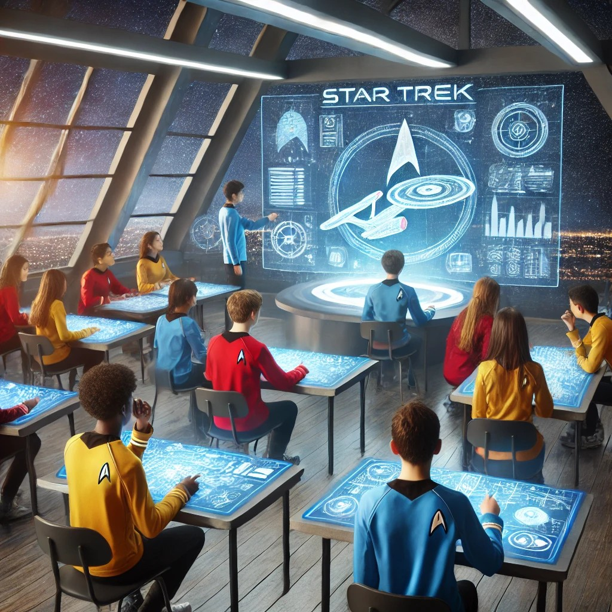

¡Bienvenidos a Bordo, Futuros Oficiales de la Flota Estelar!
Te invitamos a embarcarte en una misión estelar como cadete de la Flota Estelar, explorando temas científicos actuales que están moldeando nuestro futuro. Desde nuevas tecnologías de propulsión para viajes espaciales hasta la búsqueda de exoplanetas habitables.
Como explorador del conocimiento, utilizarás herramientas científicas y tu ingenio para navegar por territorios desconocidos. Investigaras temas como la inteligencia artificial, la biotecnología avanzada y las tecnologías de comunicación interestelar. Tu objetivo será presentar tus hallazgos en un informe detallado y crear un video.

Esta misión pondrá a prueba tu capacidad para investigar y analizar problemas científicos complejos, desafiará tu creatividad y mejorará tus habilidades de comunicación, como un verdadero oficial de la Federación.
¿Estás listo para aceptar el desafío?